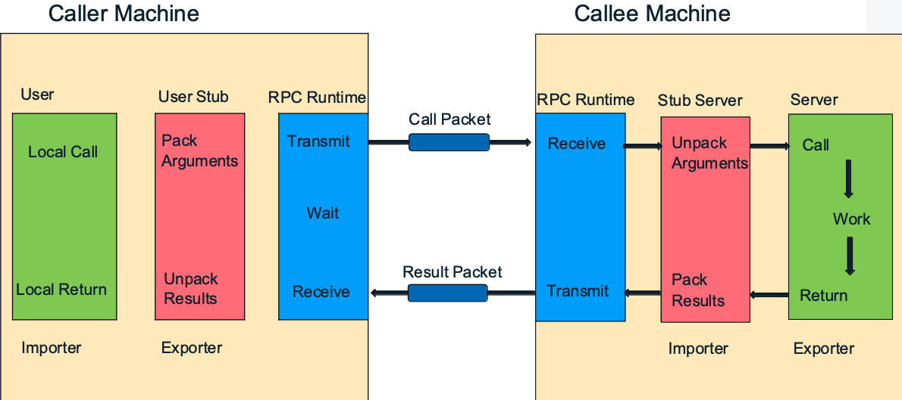

What is a distributed system
- A system where the software components that make up the system execute on two (or typically more) computers.
Key Challenges
- Heterogeneity
- Varieties and differences in networks, computer hardware, OS, programming languages, implementations.
- Address heterogeneity through the use of middleware.
- Scalability
- A scalable system operates effectively when there is a significant increase in the number of resources and the number of users. Scalability is a mean for controlling performance loss and avoiding performance bottlenecks.
- Transparency
- Concealment from the user and application programmer of the separation of components in a distributed system.
- Access transparency: local and remote resources can be accessed using identical operations.
- Location transparency: resources can be accessed without knowledge of their physical or network location.
- Openness
- Can the system be extended and re-implemented
- Degree to which new resources-sharing services can be added and be made available for use by a variety of client programs.
- Specification and documentation of key interfaces must be published.
- Open Systems: An open system is one where the components are built to common public standards.
- Security
- A variety of points that need to be protected: data flow, network, coordination and allocation service, data management / consistency service.
RPC
- Definition: RPC is a protocol that lets a program call a function on a remote machine as if it were a local function call. 
- Components:
- Client Stub: Acts like a local function but sends a request over the network
- Server Stub (Skeleton): Receives the request and invokes the real function
- Transport: Often uses HTTP, TCP, or HTTP/2
Java RMI
- A distributed Java program is one which the objects making up the program reside on two or more separate computers (virtual machines).
- Java Remote Method Invocation (for object oriented programming) provides support for clients invoking methods on remote servers.
- Write code in C -> RPC (Remote Procedure Call)
- Connection
- Server publishes its name and location to the RMI Registry
- through the RMI URLs
- Client asks the RMI Registry about the server.
- Both the RMIRegistry and Server listen on sockets for remote requests.
- Clients need to identify both the host where the server resides and the socket number (port) that it is listening on.
- Server publishes its name and location to the RMI Registry
- Invocation
- Server gives its Stub (local proxy) to the RMIRegistry, which gives it to the client.
- Stub implements the same method signatures as the Server.
- The Client invokes methods on the Stab as if it were invoking the methods directly on the Server.
- The Stub is then response for sending the request to the Server VM.
- The Stab serialises the method invocation across a socket connection connecting the Client and Server.
- It sends the method name, and the parameters of the method invocation.
- It waits for a return object or exception objects to be sent back.
- Synchronous method invocation
- The Stab serialises the method invocation across a socket connection connecting the Client and Server.
- Server gives its Stub (local proxy) to the RMIRegistry, which gives it to the client.
- Server side
- The server has a local proxy (Skeleton) for the Client.
- Skeleton creates a socket on which to listen for Client requests.
- Skeleton receives requests, de-serialises them, and invokes the method on the Server on behalf of the Client.
- Skeleton sends return result or exception objects back to Stub.
- An Open Java RMI System
- The communications protocol used when sending data between the Stub and Skeleton
- The application specific definition of the methods available for remote method invocation